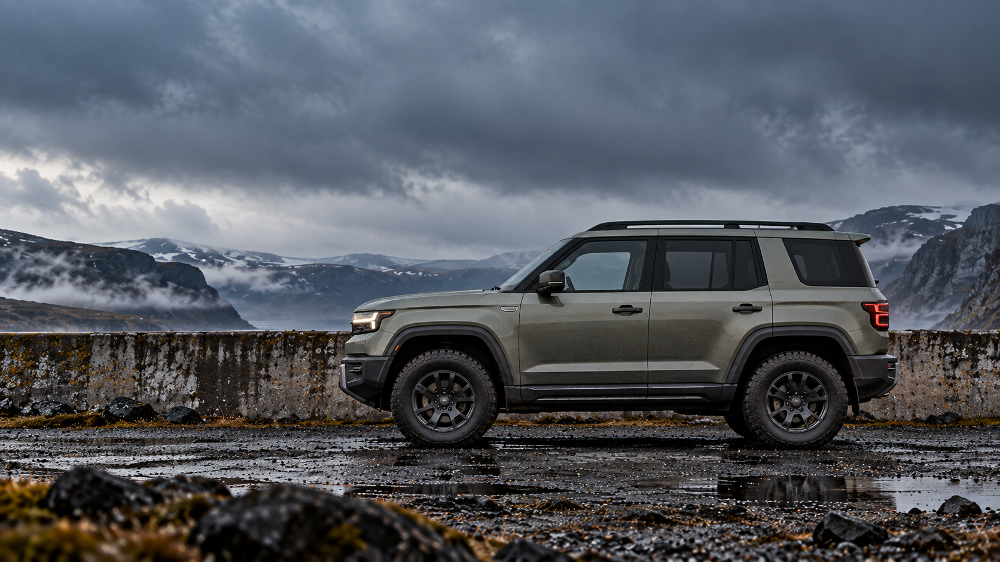
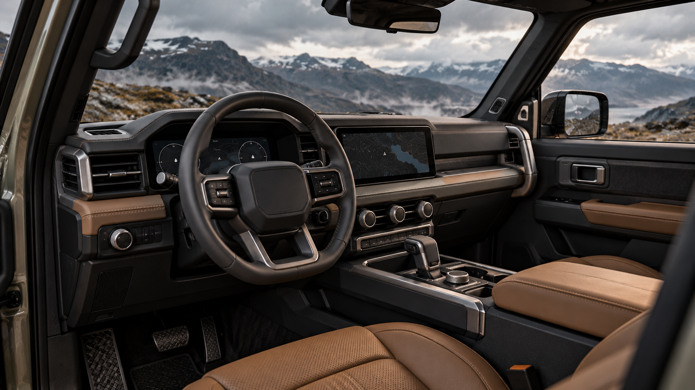

视线更开阔
高坐姿与开阔侧窗，让弯道、坡面和远处的天气更容易进入视线。

FORM STUDY / PROFILE 01VISIBILITY / SPACE / CONTROL
高坐姿与开阔侧窗，让弯道、坡面和远处的天气更容易进入视线。
平直车顶与方正车尾，为行李、摄影箱和临时加上的装备预留空间。
在这份座舱设想里，常用操作交给实体旋钮，不必层层翻找屏幕。

INSIDE O/01
深色仪表台让视线安静下来，暖棕座椅留下一点温度。实体旋钮在手边，常用操作一目了然。